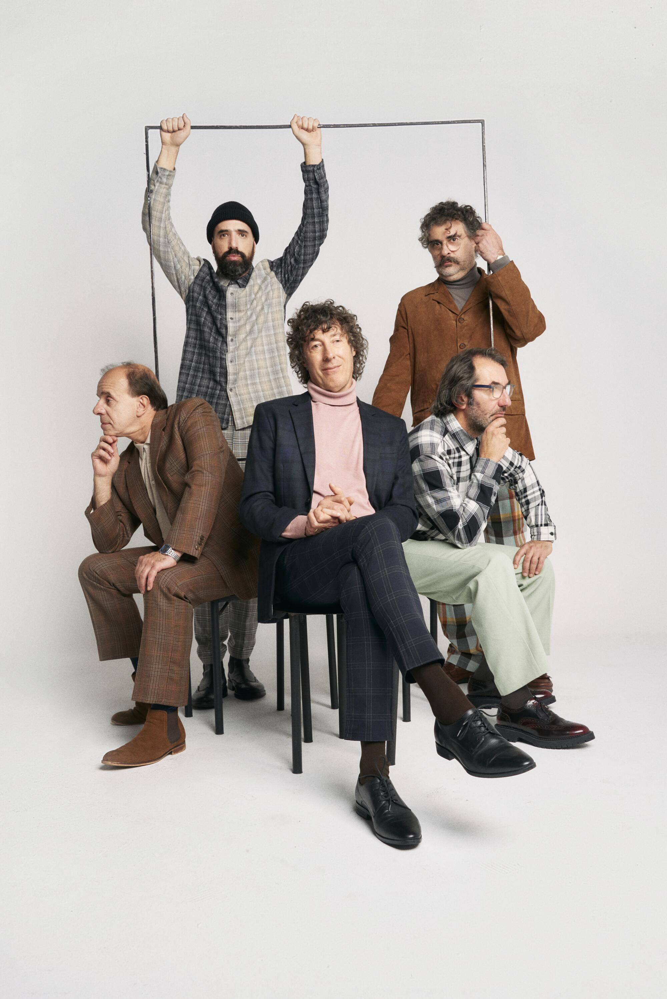

El Cuarteto de Nos es una banda de rock uruguaya formada en Montevideo en 1984. Está integrada por el cantante y guitarrista Roberto Musso, el bajista y corista Santiago Tavella, el baterista Álvaro Pintos, el guitarrista y corista Gustavo Antuña y el tecladista Santiago Marrero.
Fuente: Wikipedia leer más 